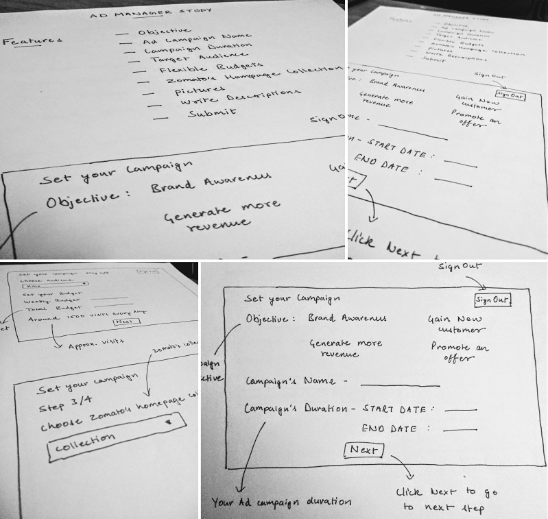
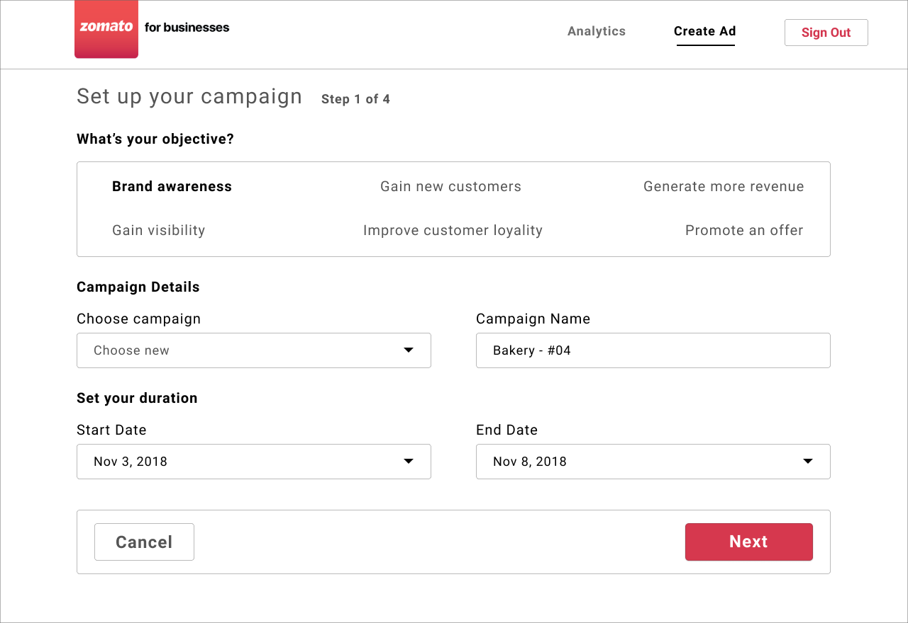
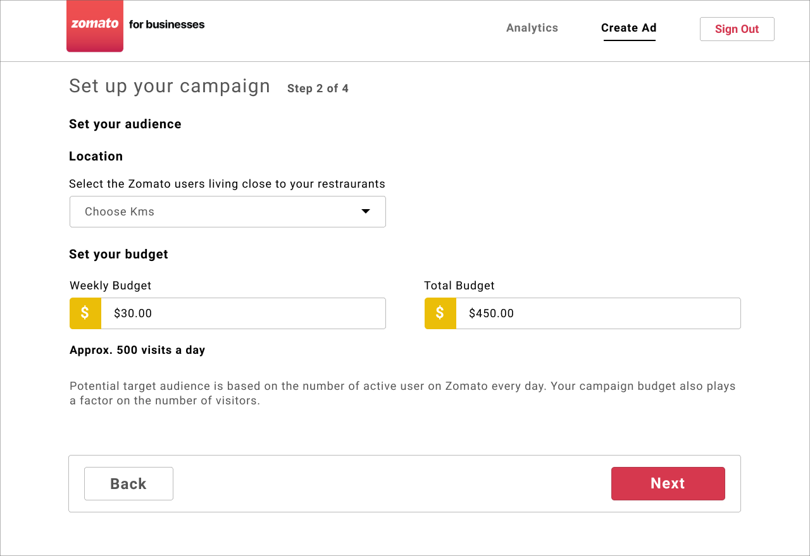
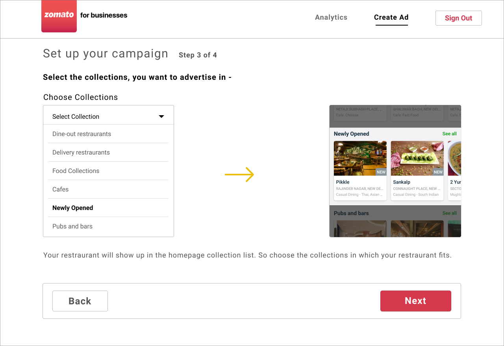
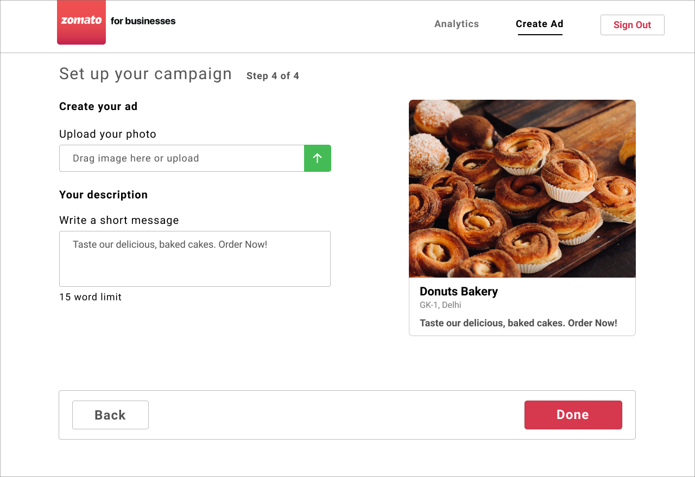

Ad Manager for Zomato

Timeline - Oct to Nov 2018
Last month, Zomato's CEO tweeted that they've hit 21 million total food orders. And are now present in 38 cities compared to only 15 cities, 7 months back.
They have also improved the overall efficiency like reducing the average delivery time and ordering revenue.
The growth has been truly exponential.
We've hit 21 million food orders in India (additional 2 million orders placed over the phone using Zomato). I think that makes us the largest food ordering company in India. For more: https://t.co/dKwMEUIHAX pic.twitter.com/hfDEq6wc4K
— Deepinder Goyal (@deepigoyal) October 5, 2018
And just to give you an interesting stat, I follow Sajith Pai, a VC at Blume Ventures on twitter. He also recently tweeted this -
I have been tracking the food ordering market for a few months now. Mildly obsessed with the numbers & what it stands for. Fascinating that Swiggy was at 200k orders /day & Zomato at 180k/day (likely includes Middle East) in Mar18. 6m on I estimate S at 666k/day & Z at 466k/day! pic.twitter.com/gSAaLwuzZ3
— Sajith Pai (@sajithpai) October 6, 2018
In just 8 months, from Jan to Sep 2018, 26 thousand new restaurants have been added to Zomato for food delivering.
Sure the numbers are going to more than double next year.
So as more restaurant gets added, the advertising is also going to increase on the platform.
Interested by this, I got an idea of designing a simple ad manager which restaurants can use to advertise.
Research
Now I started looking online for some research on advertising, and luckily found an existing user research on advertising by Aiswarya Kolisetty, product designer at Zomato.
Reading this, I understood a lot on why restaurants advertise on Zomato and the most important reasons are -
- When a restaurant is newly opened
- To gain new customers
- Announce some change like new cuisine etc
Another important point I got from this research -
"Ad spend is marketing spend, and it’s the first to get cut from a merchant’s budget when times are tough. Thus, it’s important that we allow advertisers flexible budgets and flexible time durations in ads."
Now having a certain understanding on how restraurants advertise on Zomato, I started creating some sketches and concluded the entire ad creating process into four simple steps.
After I did my research and wireframing, I started designing on Figma.
Flow
Step 1
First, set your campaign goal, name and also the duration for the ad campaign. The campaign objective offers restraurants to select their objective from 'gain new customer' or 'gain visibility', to 'promote an offer'.
Step 2
Second, select your potential target audience. Your ad performs the best, when you do hyper-localized advertisements. So select the zomato users living closer to your restraurants.
After that choose your weekly and total budget.
Step 3
Third, the ad will show up in the homepage of Zomato in collections like 'delivery restraurants' or 'newly opened' So select the collection in which your restraurants fits. Then hit next!
Step 4
Fourth and the last, now you've to make your own ad. Drag or upload the image and a write a sweet short description. That's it!
Bottom Note
In the end, this is a simple design project I did to improve my skills and no way this is near perfect, but just an attempt to finding an opportunity and designing something out of it.
Thanks for reading! Reach out to me on Twitter